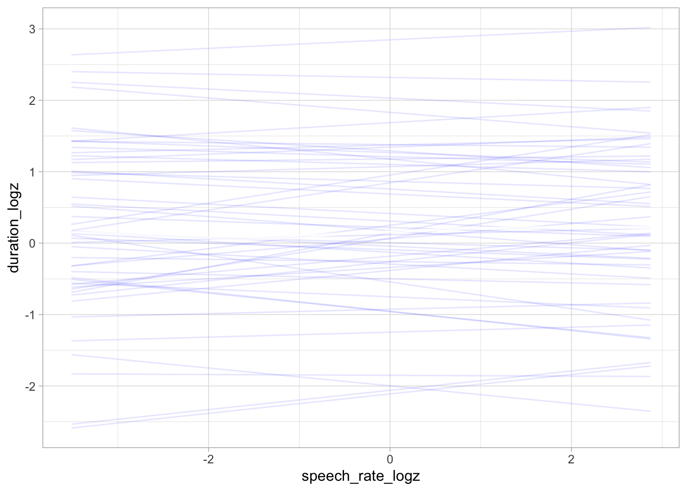
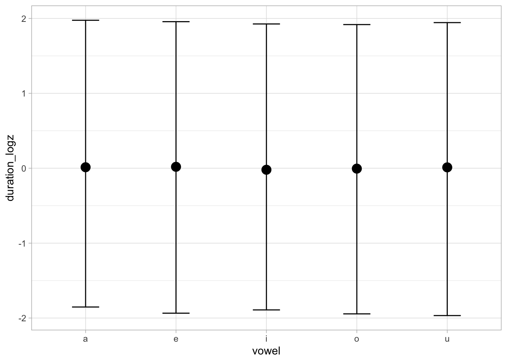
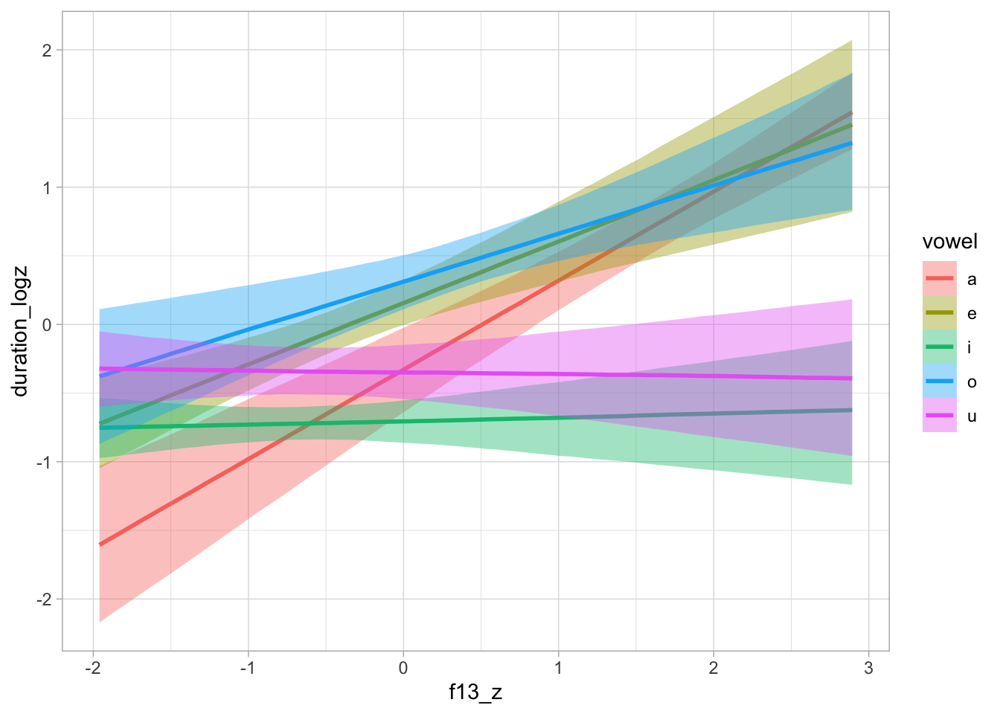
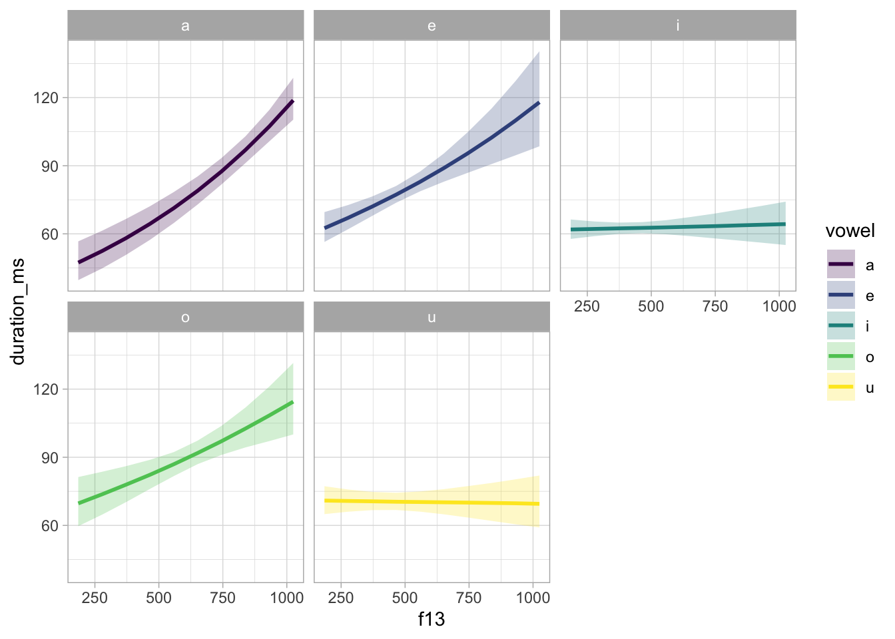
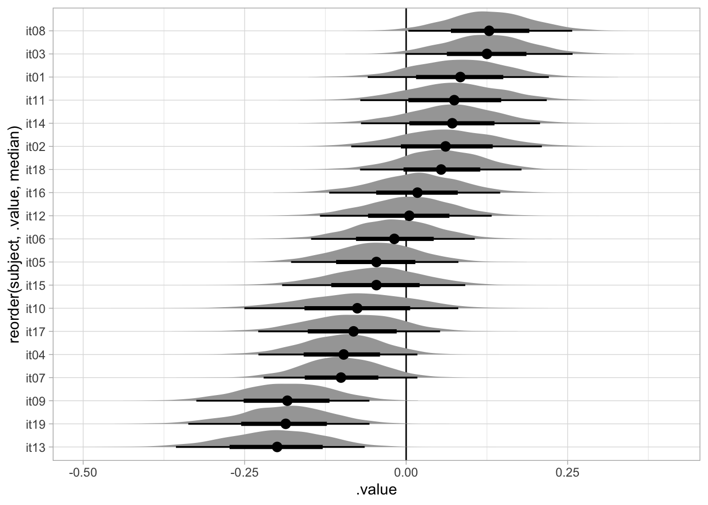
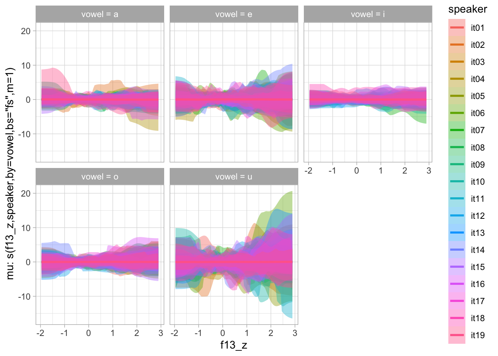

library(tidyverse)
theme_set(theme_light())
library(magrittr)
library(coretta2018itaegg)
library(brms)
library(rstan)
library(posterior)
library(tidybayes)
library(marginaleffects)
library(ggdist)
library(mgcv)
library(tidygam)
library(HDInterval)
library(truncdist)
library(ggdist)
my_seed <- 9899
cols <- viridisLite::viridis(5)
cols[5] <- "#d95f02"Analysis of intrinsic vowel duration in Northwestern Italian
1 Attach packages
2 Read data
The following code loads the data from the coretta2018itaegg package and creates new variables as transformations of the existing ones.
data("ita_egg")
ita_egg <- ita_egg |>
drop_na(f13, f23) |>
mutate(
duration = v1_duration,
vowel = as.factor(vowel),
duration_z = as.vector(scale(duration)),
duration_log = log(duration),
duration_logz = as.vector(scale(log(duration))),
speech_rate_log = log(speech_rate),
speech_rate_logz = as.vector(scale(log(speech_rate_log))),
f13_z = as.vector(scale(f13)),
f23_z = as.vector(scale(f23)),
speaker = as.factor(speaker),
word_ipa = str_replace_all(word, "ch|c", "k"),
previous_sound = str_sub(word_ipa, 1, 1),
next_sound = str_sub(word_ipa, 3, 3)
)3 Plotting
ita_egg %>%
group_by(speaker) %>%
mutate(
f13_speaker_z = as.vector(scale(f13)),
f23_speaker_z = as.vector(scale(f23))
) %>%
ggplot(aes(f23_speaker_z, f13_speaker_z, colour = vowel)) +
geom_point(alpha = 0.2) +
stat_ellipse(type = "norm") +
scale_x_reverse(position = "top") + scale_y_reverse(position = "right") +
coord_fixed()
ita_egg %>%
group_by(speaker) %>%
mutate(
f13_speaker_z = as.vector(scale(f13)),
f23_speaker_z = as.vector(scale(f23))
) %>%
ggplot(aes(f23_speaker_z, f13_speaker_z)) +
geom_point(aes(colour = duration), alpha = 0.8) +
stat_ellipse(aes(group = vowel), type = "norm") +
scale_x_reverse(position = "top") + scale_y_reverse(position = "right") +
coord_fixed()
ita_egg %>%
ggplot(aes(f13_z, duration_z)) +
geom_density_2d_filled()ita_egg |>
ggplot(aes(vowel, duration)) +
geom_jitter(width = 0.2, alpha = 0.2) +
facet_grid(rows = vars(next_sound), cols = vars(previous_sound))ita_egg %>%
ggplot(aes(f13_z, duration_z, colour = vowel)) +
geom_point(alpha = 0.2) +
geom_smooth(method = "lm", formula = y ~ x)4 Linear modelling
4.1 Prior predictive checks
The outcome duration_logz and predictor f13_z are z-scored and the intercept has been suppressed so that the indexing method is used for the vowel predictor instead of contrasts.
I am using relatively weakly informative priors.
bm_1_f <- bf(
duration_logz ~ a + b*f13_z + c*speech_rate_logz,
a ~ 0 + vowel + (0 + vowel | speaker),
b ~ 0 + vowel + (0 + vowel | speaker),
c ~ (1 | speaker),
nl = TRUE
)
bm_1_get <- get_prior(
bm_1_f,
data = ita_egg,
family = gaussian,
) |> as_tibble()
bm_1_get# A tibble: 34 × 10
prior class coef group resp dpar nlpar lb ub source
<chr> <chr> <chr> <chr> <chr> <chr> <chr> <chr> <chr> <chr>
1 "lkj(1)" cor "" "" "" "" "" "" "" defau…
2 "" cor "" "spe… "" "" "" "" "" defau…
3 "student_t(3, 0, 2.5)" sigma "" "" "" "" "" "0" "" defau…
4 "" b "" "" "" "" "a" "" "" defau…
5 "" b "vow… "" "" "" "a" "" "" defau…
6 "" b "vow… "" "" "" "a" "" "" defau…
7 "" b "vow… "" "" "" "a" "" "" defau…
8 "" b "vow… "" "" "" "a" "" "" defau…
9 "" b "vow… "" "" "" "a" "" "" defau…
10 "student_t(3, 0, 2.5)" sd "" "" "" "" "a" "0" "" defau…
# ℹ 24 more rowspriors <- c(
prior(normal(0, 1), class = b, nlpar = a),
prior(normal(0, 1), class = b, nlpar = b),
prior(normal(0, 0.1), class = b, nlpar = c),
prior(cauchy(0, 0.1), class = sigma),
prior(lkj(2), class = cor),
prior(cauchy(0, 0.1), class = sd, nlpar = a),
prior(cauchy(0, 0.1), class = sd, nlpar = b),
prior(cauchy(0, 0.1), class = sd, nlpar = c)
)
bm_1_priors <- brm(
bm_1_f,
family = gaussian,
data = ita_egg,
prior = priors,
cores = 4,
threads = threading(2),
backend = "cmdstanr",
sample_prior = "only",
file = "data/cache/bm_1_priors",
)
bm_1_priors Family: gaussian
Links: mu = identity; sigma = identity
Formula: duration_logz ~ a + b * f13_z + c * speech_rate_logz
a ~ 0 + vowel + (0 + vowel | speaker)
b ~ 0 + vowel + (0 + vowel | speaker)
c ~ (1 | speaker)
Data: ita_egg (Number of observations: 3019)
Draws: 4 chains, each with iter = 2000; warmup = 1000; thin = 1;
total post-warmup draws = 4000
Multilevel Hyperparameters:
~speaker (Number of levels: 19)
Estimate Est.Error l-95% CI u-95% CI Rhat Bulk_ESS
sd(a_vowela) 1.11 25.26 0.00 2.75 1.00 8604
sd(a_vowele) 0.33 1.32 0.01 1.74 1.00 8308
sd(a_voweli) 0.55 6.73 0.00 2.09 1.00 7426
sd(a_vowelo) 0.41 2.11 0.00 2.43 1.00 6757
sd(a_vowelu) 0.46 3.22 0.00 2.24 1.00 7877
sd(b_vowela) 0.62 7.27 0.00 2.31 1.00 7362
sd(b_vowele) 0.54 8.01 0.00 2.14 1.00 10061
sd(b_voweli) 1.05 30.02 0.00 2.62 1.00 7702
sd(b_vowelo) 0.71 19.30 0.00 2.24 1.00 9774
sd(b_vowelu) 0.43 1.81 0.00 2.82 1.00 9429
sd(c_Intercept) 0.49 4.20 0.00 2.22 1.00 9309
cor(a_vowela,a_vowele) -0.01 0.35 -0.67 0.64 1.01 11734
cor(a_vowela,a_voweli) 0.00 0.34 -0.66 0.66 1.00 12215
cor(a_vowele,a_voweli) 0.00 0.35 -0.67 0.68 1.00 7121
cor(a_vowela,a_vowelo) -0.01 0.35 -0.66 0.65 1.00 11363
cor(a_vowele,a_vowelo) 0.00 0.36 -0.66 0.67 1.00 6123
cor(a_voweli,a_vowelo) 0.00 0.35 -0.66 0.67 1.00 4810
cor(a_vowela,a_vowelu) 0.00 0.36 -0.67 0.68 1.00 13040
cor(a_vowele,a_vowelu) -0.00 0.36 -0.67 0.67 1.00 6588
cor(a_voweli,a_vowelu) -0.00 0.36 -0.66 0.67 1.00 4154
cor(a_vowelo,a_vowelu) 0.00 0.35 -0.65 0.66 1.00 3144
cor(b_vowela,b_vowele) 0.01 0.35 -0.66 0.66 1.00 12014
cor(b_vowela,b_voweli) -0.00 0.36 -0.67 0.66 1.00 10880
cor(b_vowele,b_voweli) 0.01 0.35 -0.64 0.68 1.00 6186
cor(b_vowela,b_vowelo) 0.00 0.35 -0.67 0.66 1.00 13449
cor(b_vowele,b_vowelo) -0.01 0.35 -0.68 0.66 1.00 6856
cor(b_voweli,b_vowelo) 0.01 0.36 -0.67 0.66 1.00 4734
cor(b_vowela,b_vowelu) -0.00 0.36 -0.67 0.65 1.00 12167
cor(b_vowele,b_vowelu) -0.00 0.36 -0.66 0.67 1.00 6022
cor(b_voweli,b_vowelu) 0.00 0.35 -0.64 0.65 1.00 3518
cor(b_vowelo,b_vowelu) 0.00 0.35 -0.66 0.66 1.00 3482
Tail_ESS
sd(a_vowela) 2445
sd(a_vowele) 2546
sd(a_voweli) 2217
sd(a_vowelo) 2541
sd(a_vowelu) 2144
sd(b_vowela) 2479
sd(b_vowele) 2517
sd(b_voweli) 2345
sd(b_vowelo) 2321
sd(b_vowelu) 2354
sd(c_Intercept) 2310
cor(a_vowela,a_vowele) 2458
cor(a_vowela,a_voweli) 2518
cor(a_vowele,a_voweli) 3191
cor(a_vowela,a_vowelo) 2697
cor(a_vowele,a_vowelo) 2699
cor(a_voweli,a_vowelo) 3173
cor(a_vowela,a_vowelu) 2710
cor(a_vowele,a_vowelu) 2797
cor(a_voweli,a_vowelu) 2695
cor(a_vowelo,a_vowelu) 2937
cor(b_vowela,b_vowele) 2696
cor(b_vowela,b_voweli) 2298
cor(b_vowele,b_voweli) 2681
cor(b_vowela,b_vowelo) 2977
cor(b_vowele,b_vowelo) 2542
cor(b_voweli,b_vowelo) 2871
cor(b_vowela,b_vowelu) 2707
cor(b_vowele,b_vowelu) 2342
cor(b_voweli,b_vowelu) 2627
cor(b_vowelo,b_vowelu) 3112
Regression Coefficients:
Estimate Est.Error l-95% CI u-95% CI Rhat Bulk_ESS Tail_ESS
a_vowela 0.02 0.97 -1.85 1.98 1.00 8844 2865
a_vowele 0.01 1.00 -1.94 1.96 1.00 10706 2936
a_voweli -0.01 1.00 -1.89 1.93 1.00 9182 2751
a_vowelo 0.00 0.98 -1.94 1.92 1.00 12455 2688
a_vowelu 0.00 1.00 -1.97 1.94 1.00 10904 3011
b_vowela 0.01 1.01 -1.95 1.97 1.00 11811 2742
b_vowele -0.01 0.99 -1.96 1.98 1.00 11393 3197
b_voweli 0.00 1.01 -1.96 1.96 1.00 12251 2620
b_vowelo -0.01 1.05 -2.10 2.05 1.00 12534 2546
b_vowelu 0.01 0.99 -1.93 1.95 1.00 11316 2517
c_Intercept -0.00 0.10 -0.20 0.20 1.00 10103 2668
Further Distributional Parameters:
Estimate Est.Error l-95% CI u-95% CI Rhat Bulk_ESS Tail_ESS
sigma 0.72 12.74 0.00 2.56 1.01 7603 2107
Draws were sampled using sample(hmc). For each parameter, Bulk_ESS
and Tail_ESS are effective sample size measures, and Rhat is the potential
scale reduction factor on split chains (at convergence, Rhat = 1).conditional_effects(bm_1_priors, "f13_z:vowel", spaghetti = TRUE, ndraws = 50)conditional_effects(bm_1_priors, "speech_rate_logz", spaghetti = TRUE, ndraws = 50)
conditional_effects(bm_1_priors, "vowel")
4.2 Model fit
bm_1 <- brm(
bm_1_f,
family = gaussian,
data = ita_egg,
prior = priors,
cores = 4,
threads = threading(2),
backend = "cmdstanr",
file = "data/cache/bm_1",
)fixef(bm_1, probs = c(0.05, 0.95)) Estimate Est.Error Q5 Q95
a_vowela -0.33212647 0.18636619 -0.641270550 -0.02407815
a_vowele 0.15668372 0.09927159 -0.004686015 0.32129140
a_voweli -0.70613066 0.09221314 -0.862435900 -0.55296415
a_vowelo 0.31025832 0.12032693 0.110082400 0.50389110
a_vowelu -0.34888466 0.11976408 -0.542942550 -0.14873705
b_vowela 0.65081756 0.09310190 0.498250050 0.80315175
b_vowele 0.44757348 0.11346518 0.259421800 0.63246600
b_voweli 0.02357344 0.08708159 -0.121712200 0.16573770
b_vowelo 0.35262737 0.11552824 0.159666000 0.54349990
b_vowelu -0.01341929 0.09617521 -0.170243500 0.14348040
c_Intercept -0.25124883 0.03395694 -0.304185300 -0.19300660bm_1_coef_table_a <- bm_1 %>%
as_draws_df() %>%
select(b_a_vowela:b_a_vowelu) %>%
pivot_longer(b_a_vowela:b_a_vowelu) %>%
group_by(name) |>
reframe(
q95 = round(quantile2(value, probs = c(0.025, 0.975)), 2),
q90 = round(quantile2(value, probs = c(0.05, 0.95)), 2),
q80 = round(quantile2(value, probs = c(0.1, 0.9)), 2),
q60 = round(quantile2(value, probs = c(0.2, 0.8)), 2)
) |>
mutate(limit = rep(c("lo", "hi"), length.out = n())) |>
pivot_wider(names_from = limit, values_from = q95:q60) |>
unite("q95", q95_lo, q95_hi, sep = ", ") |>
unite("q90", q90_lo, q90_hi, sep = ", ") |>
unite("q80", q80_lo, q80_hi, sep = ", ") |>
unite("q60", q60_lo, q60_hi, sep = ", ")Warning: Dropping 'draws_df' class as required metadata was removed.bm_1_coef_table_a# A tibble: 5 × 5
name q95 q90 q80 q60
<chr> <chr> <chr> <chr> <chr>
1 b_a_vowela -0.71, 0.03 -0.64, -0.02 -0.57, -0.09 -0.49, -0.18
2 b_a_vowele -0.04, 0.36 0, 0.32 0.03, 0.28 0.07, 0.24
3 b_a_voweli -0.89, -0.52 -0.86, -0.55 -0.82, -0.59 -0.78, -0.63
4 b_a_vowelo 0.07, 0.54 0.11, 0.5 0.16, 0.47 0.21, 0.41
5 b_a_vowelu -0.58, -0.11 -0.54, -0.15 -0.5, -0.2 -0.45, -0.25# bm_1_coef_table_a |> knitr::kable(format = "latex") %>% cat(sep = "\n")bm_1_coef_table_b <- bm_1 %>%
as_draws_df() %>%
select(b_b_vowela:b_b_vowelu) %>%
pivot_longer(b_b_vowela:b_b_vowelu) %>%
group_by(name) %>%
median_hdi() Warning: Dropping 'draws_df' class as required metadata was removed.bm_1_coef_table_b# A tibble: 5 × 7
name value .lower .upper .width .point .interval
<chr> <dbl> <dbl> <dbl> <dbl> <chr> <chr>
1 b_b_vowela 0.650 0.477 0.845 0.95 median hdi
2 b_b_vowele 0.449 0.226 0.665 0.95 median hdi
3 b_b_voweli 0.0261 -0.145 0.198 0.95 median hdi
4 b_b_vowelo 0.350 0.124 0.577 0.95 median hdi
5 b_b_vowelu -0.0140 -0.195 0.182 0.95 median hdi # bm_1_coef_table_b |> knitr::kable(format = "latex") %>% cat(sep = "\n")bm_1_coef_table_b_2 <- bm_1 %>%
as_draws_df() %>%
select(b_b_vowela:b_b_vowelu) %>%
pivot_longer(b_b_vowela:b_b_vowelu) %>%
group_by(name) |>
reframe(
q95 = round(quantile2(value, probs = c(0.025, 0.975)), 2),
q90 = round(quantile2(value, probs = c(0.05, 0.95)), 2),
q80 = round(quantile2(value, probs = c(0.1, 0.9)), 2),
q60 = round(quantile2(value, probs = c(0.2, 0.8)), 2)
) |>
mutate(limit = rep(c("lo", "hi"), length.out = n())) |>
pivot_wider(names_from = limit, values_from = q95:q60) |>
unite("q95", q95_lo, q95_hi, sep = ", ") |>
unite("q90", q90_lo, q90_hi, sep = ", ") |>
unite("q80", q80_lo, q80_hi, sep = ", ") |>
unite("q60", q60_lo, q60_hi, sep = ", ")Warning: Dropping 'draws_df' class as required metadata was removed.bm_1_coef_table_b_2# A tibble: 5 × 5
name q95 q90 q80 q60
<chr> <chr> <chr> <chr> <chr>
1 b_b_vowela 0.47, 0.84 0.5, 0.8 0.53, 0.77 0.57, 0.73
2 b_b_vowele 0.23, 0.67 0.26, 0.63 0.3, 0.59 0.35, 0.54
3 b_b_voweli -0.15, 0.19 -0.12, 0.17 -0.09, 0.13 -0.05, 0.09
4 b_b_vowelo 0.12, 0.58 0.16, 0.54 0.21, 0.5 0.26, 0.45
5 b_b_vowelu -0.2, 0.18 -0.17, 0.14 -0.13, 0.11 -0.09, 0.07# bm_1_coef_table_b_2 |> knitr::kable(format = "latex") %>% cat(sep = "\n")4.3 Posterior predictive check and sensitivity analysis
pp_check(bm_1, ndraws = 50)
bm_1_fix <- fixef(bm_1) |> as_tibble(rownames = "term") |>
mutate(
theta = rep(0, 11),
sigma_prior = c(rep(1, 10), 0.1),
z = abs((Estimate - theta) / Est.Error),
s = 1 - (Est.Error^2 / sigma_prior^2)
)
bm_1_fix# A tibble: 11 × 9
term Estimate Est.Error Q2.5 Q97.5 theta sigma_prior z s
<chr> <dbl> <dbl> <dbl> <dbl> <dbl> <dbl> <dbl> <dbl>
1 a_vowela -0.332 0.186 -0.706 0.0268 0 1 1.78 0.965
2 a_vowele 0.157 0.0993 -0.0395 0.357 0 1 1.58 0.990
3 a_voweli -0.706 0.0922 -0.887 -0.520 0 1 7.66 0.991
4 a_vowelo 0.310 0.120 0.0713 0.545 0 1 2.58 0.986
5 a_vowelu -0.349 0.120 -0.576 -0.108 0 1 2.91 0.986
6 b_vowela 0.651 0.0931 0.467 0.836 0 1 6.99 0.991
7 b_vowele 0.448 0.113 0.226 0.665 0 1 3.94 0.987
8 b_voweli 0.0236 0.0871 -0.153 0.194 0 1 0.271 0.992
9 b_vowelo 0.353 0.116 0.125 0.578 0 1 3.05 0.987
10 b_vowelu -0.0134 0.0962 -0.200 0.177 0 1 0.140 0.991
11 c_Intercept -0.251 0.0340 -0.314 -0.181 0 0.1 7.40 0.885labels <- tibble(
s = c(0.25, 0.25, 0.75, 0.75),
z = c(1.25, 3.75, 1.25, 3.75),
term = c("Poorly identified", "Prior/Posterior\nconflict", "Ideal", "Overfit")
)
bm_1_fix |>
ggplot(aes(s, z, label = term)) +
annotate("rect", xmin = 0, ymin = 0, xmax = 0.5, ymax = 2.5, alpha = 0.5, fill = "#e66101") +
annotate("rect", xmin = 0, ymin = 2.5, xmax = 0.5, ymax = Inf, alpha = 0.5, fill = "#fdb863") +
annotate("rect", xmin = 0.5, ymin = 0, xmax = 1, ymax = 2.5, alpha = 0.5, fill = "#b2abd2") +
annotate("rect", xmin = 0.5, ymin = 2.5, xmax = 1, ymax = Inf, alpha = 0.5, fill = "#5e3c99") +
geom_text() +
geom_point() +
geom_label(data = labels, colour = "white", fill = "black") +
xlim(0, 1)4.4 Model plotting
conditional_effects(bm_1, "f13_z:vowel", prob = 0.9)
conditional_effects(bm_1, "f13_z:vowel", spaghetti = TRUE, ndraws = 100, prob = 0.9)
We need to get the predicted draws to convert duration and F1 back to ms and hz. Note that duration was logged then scaled.
seq_minmax <- function(x, by = 1) {
seq(min(x), max(x), by = by)
}
bm_1_grid <- expand_grid(
vowel = levels(ita_egg$vowel),
f13_z = seq_minmax(ita_egg$f13_z, 0.5),
speech_rate_logz = 0
)
bm_1_preds <- epred_draws(bm_1, newdata = bm_1_grid, re_formula = NA) %>%
mutate(
duration_log = .epred * sd(ita_egg$duration_log) + mean(ita_egg$duration_log),
duration = exp(duration_log),
f13 = f13_z * sd(ita_egg$f13) + mean(ita_egg$f13)
)Let’s also calculate the mean F1 values for each vowel, to be added in the plot below.
vmean_f13 <- ita_egg %>%
group_by(vowel) %>%
summarise(f13_mean = mean(f13))
vmean_f13z <- ita_egg %>%
group_by(vowel) %>%
summarise(f13z_mean = mean(f13_z))We can now plot the model predictions in the original scale.
bm_1_preds %>%
group_by(vowel, f13) %>%
summarise(
duration_ms = median(duration),
# Get the 90% CrI
q0.05 = quantile(duration, probs = 0.05),
q0.90 = quantile(duration, probs = 0.95),
.groups = "drop"
) %>%
ggplot(aes(f13, duration_ms)) +
geom_ribbon(aes(ymin = q0.05, ymax = q0.90, fill = vowel), alpha = 0.25) +
geom_line(aes(colour = vowel), linewidth = 1) +
facet_wrap(~vowel) +
scale_colour_viridis_d() +
scale_fill_viridis_d()
bm_1_preds %>%
group_by(vowel, f13) %>%
ggplot(aes(f13, duration)) +
stat_lineribbon() +
facet_wrap(~vowel) +
scale_fill_brewer()
bm_1_preds %>%
mutate(
vowel = str_replace(vowel, "o", "ɔ"),
vowel = factor(vowel, levels = c("i", "u", "e", "ɔ", "a"))
) |>
group_by(vowel, f13) %>%
ggplot(aes(f13, duration, fill = vowel)) +
stat_ribbon(.width = 0.98, alpha = 0.2) +
stat_ribbon(.width = 0.9, alpha = 0.4) +
stat_lineribbon(.width = 0.6, alpha = 0.8) +
geom_vline(data = vmean_f13 |> mutate(
vowel = str_replace(vowel, "o", "ɔ"),
vowel = factor(vowel, levels = c("i", "u", "e", "ɔ", "a"))
), aes(xintercept = f13_mean, colour = vowel), linetype = "dashed") +
geom_rug(data = ita_egg |> mutate(
vowel = str_replace(vowel, "o", "ɔ"),
vowel = factor(vowel, levels = c("i", "u", "e", "ɔ", "a"))
), alpha = 0.1, length = unit(0.015, "npc"), aes(colour = vowel)) +
facet_wrap(~vowel) +
labs(
x = "F1 (Hz)", y = "Duration (ms)"
) +
scale_fill_manual(values = cols) +
scale_color_manual(values = cols) +
theme(legend.position = "none")
ggsave("img/bm1-pred-plot-ms-hz.png", width = 7, height = 5)But let’s also plot this in the standardised logged duration scale.
bm_1_preds %>%
group_by(vowel, f13) %>%
ggplot(aes(f13_z, .epred, fill = vowel)) +
stat_ribbon(.width = 0.98, alpha = 0.2) +
stat_ribbon(.width = 0.9, alpha = 0.4) +
stat_lineribbon(.width = 0.6, alpha = 0.8) +
geom_vline(data = vmean_f13z, aes(xintercept = f13z_mean, colour = vowel)) +
facet_wrap(~vowel) +
scale_fill_viridis_d()4.5 Average predictions and comparisons
avg_comparisons(bm_1, variables = "f13_z", conf_level = 0.9)
Term Contrast Estimate 5.0 % 95.0 %
f13_z mean(+1) 0.276 0.205 0.345
Columns: term, contrast, estimate, conf.low, conf.high, predicted_lo, predicted_hi, predicted, tmp_idx
Type: response avg_comparisons(bm_1, variables = "f13_z", by = "vowel", conf_level = 0.9)
Term Contrast vowel Estimate 5.0 % 95.0 %
f13_z mean(+1) o 0.3504 0.165 0.538
f13_z mean(+1) e 0.4486 0.266 0.630
f13_z mean(+1) u -0.0157 -0.146 0.121
f13_z mean(+1) i 0.0261 -0.119 0.161
f13_z mean(+1) a 0.6503 0.500 0.797
Columns: term, contrast, vowel, estimate, conf.low, conf.high, predicted_lo, predicted_hi, predicted, tmp_idx
Type: response avg_predictions(bm_1, by = "vowel", conf_level = 0.9) %>%
as_tibble() %>%
mutate_if(
is.numeric, function(x) {exp(x * sd(ita_egg$duration_log) + mean(ita_egg$duration_log))}
)# A tibble: 5 × 4
vowel estimate conf.low conf.high
<fct> <dbl> <dbl> <dbl>
1 a 99.5 98.4 101.
2 e 79.2 78.3 80.0
3 i 63.0 62.3 63.7
4 o 91.3 90.2 92.4
5 u 70.8 70.0 71.54.6 Group-level effects
bm_1_ranef <- bm_1 %>%
gather_draws(r_speaker__c[subject,var])bm_1_ranef %>%
ggplot(aes(y = reorder(subject, .value, median), x = .value)) +
geom_vline(xintercept = 0) +
stat_halfeye()
5 Non-linear modelling: GAM
A GAM model with the mgcv package is run to get an estimate number of k since brms does not optimise k and fits the model just with the default k which can slow down the MCMC sampling with large values of k.
gam_1 <- bam(
duration_logz ~
vowel +
s(f13_z) +
s(f13_z, speaker, by = vowel, bs = "fs", m = 1) +
s(speech_rate_logz) +
s(speech_rate_logz, speaker, bs = "fs", m = 1),
data = ita_egg
)Warning in gam.side(sm, X, tol = .Machine$double.eps^0.5): model has repeated
1-d smooths of same variable.summary(gam_1)
Family: gaussian
Link function: identity
Formula:
duration_logz ~ vowel + s(f13_z) + s(f13_z, speaker, by = vowel,
bs = "fs", m = 1) + s(speech_rate_logz) + s(speech_rate_logz,
speaker, bs = "fs", m = 1)
Parametric coefficients:
Estimate Std. Error t value Pr(>|t|)
(Intercept) 0.10762 0.14848 0.725 0.4686
vowele 0.05915 0.14477 0.409 0.6829
voweli -0.59166 0.15070 -3.926 8.83e-05 ***
vowelo 0.28281 0.12060 2.345 0.0191 *
vowelu -0.22071 0.16073 -1.373 0.1698
---
Signif. codes: 0 '***' 0.001 '**' 0.01 '*' 0.05 '.' 0.1 ' ' 1
Approximate significance of smooth terms:
edf Ref.df F p-value
s(f13_z) 3.484 4.235 12.819 < 2e-16 ***
s(f13_z,speaker):vowela 16.684 144.000 0.346 < 2e-16 ***
s(f13_z,speaker):vowele 17.048 137.000 0.247 1.19e-06 ***
s(f13_z,speaker):voweli 11.431 148.000 0.121 3.31e-05 ***
s(f13_z,speaker):vowelo 18.291 147.000 0.315 < 2e-16 ***
s(f13_z,speaker):vowelu 24.993 151.000 0.606 < 2e-16 ***
s(speech_rate_logz) 4.183 4.948 20.333 < 2e-16 ***
s(speech_rate_logz,speaker) 52.949 170.000 2.523 < 2e-16 ***
---
Signif. codes: 0 '***' 0.001 '**' 0.01 '*' 0.05 '.' 0.1 ' ' 1
R-sq.(adj) = 0.742 Deviance explained = 75.5%
fREML = 2415.4 Scale est. = 0.2583 n = 3019vmean <- aggregate(ita_egg$f13_z, list(ita_egg$vowel), mean)
# fs_terms <- c("s(f13_z,speaker)")
fs_terms <- c("s(f13_z,speaker):vowela", "s(f13_z,speaker):vowele", "s(f13_z,speaker):voweli", "s(f13_z,speaker):vowelo", "s(f13_z,speaker):vowelu", "s(speech_rate_logz,speaker)")
predict_gam(gam_1, exclude_terms = fs_terms, length_out = 100, values = list(speech_rate_logz = 0)) %>%
plot(series = "f13_z", comparison = "vowel") +
geom_vline(data = vmean, aes(xintercept = x, colour = Group.1)) +
geom_hline(yintercept = 0, linetype = "dashed") +
facet_wrap(~vowel)Warning: There was 1 warning in `dplyr::mutate()`.
ℹ In argument: `fit = rowSums(dplyr::across())`.
Caused by warning:
! Using `across()` without supplying `.cols` was deprecated in dplyr 1.1.0.
ℹ Please supply `.cols` instead.
6 Non-linear modelling: BRM
6.1 Prior predictive checks
priors_s <- c(
prior(normal(0, 1), class = b),
prior(cauchy(0, 0.01), class = sigma),
prior(cauchy(0, 1), class = sds)
)
bms_1_f <- bf(
duration_logz ~
0 + vowel +
s(f13_z, k = 5) +
s(f13_z, speaker, by = vowel, bs = "fs", m = 1) +
s(speech_rate_logz, k = 5) +
s(speech_rate_logz, speaker, bs = "fs", m = 1)
)
bms_1_priors <- brm(
bms_1_f,
family = gaussian,
data = ita_egg,
prior = priors_s,
sample_prior = "only",
cores = 4,
threads = threading(2),
backend = "cmdstanr",
file = "data/cache/bms_1_priors",
seed = my_seed
)plot(conditional_smooths(bms_1_priors, ndraws = 100), ask = FALSE)

6.2 Model fit
We specify k = 5 based on the mgcv modelling above. Reducing k speeds up estimation (because there are less basis functions, hence less parameters to estimate).
The model takes about 4-5 hours to run on 8 cores.
bms_1 <- brm(
bms_1_f,
family = gaussian,
data = ita_egg,
prior = priors_s,
cores = 4,
threads = threading(2),
backend = "cmdstanr",
file = "data/cache/bms_1",
seed = my_seed
)summary(bms_1, prob = 0.9) Family: gaussian
Links: mu = identity; sigma = identity
Formula: duration_logz ~ 0 + vowel + s(f13_z, k = 5) + s(f13_z, speaker, by = vowel, bs = "fs", m = 1) + s(speech_rate_logz, k = 5) + s(speech_rate_logz, speaker, bs = "fs", m = 1)
Data: ita_egg (Number of observations: 3019)
Draws: 4 chains, each with iter = 2000; warmup = 1000; thin = 1;
total post-warmup draws = 4000
Smoothing Spline Hyperparameters:
Estimate Est.Error l-90% CI u-90% CI Rhat
sds(sf13_z_1) 1.57 0.87 0.69 3.22 1.00
sds(sf13_zspeakervowela_1) 0.34 0.23 0.03 0.76 1.00
sds(sf13_zspeakervowela_2) 1.90 1.96 0.08 6.11 1.01
sds(sf13_zspeakervowele_1) 0.33 0.22 0.03 0.74 1.00
sds(sf13_zspeakervowele_2) 1.93 1.96 0.09 6.17 1.00
sds(sf13_zspeakervoweli_1) 0.33 0.22 0.02 0.74 1.01
sds(sf13_zspeakervoweli_2) 1.99 2.03 0.09 6.40 1.00
sds(sf13_zspeakervowelo_1) 0.34 0.23 0.03 0.75 1.01
sds(sf13_zspeakervowelo_2) 1.82 1.90 0.09 5.93 1.00
sds(sf13_zspeakervowelu_1) 0.32 0.23 0.03 0.74 1.01
sds(sf13_zspeakervowelu_2) 2.04 2.03 0.08 6.17 1.01
sds(sspeech_rate_logz_1) 0.45 0.44 0.03 1.23 1.00
sds(sspeech_rate_logzspeaker_1) 0.78 0.13 0.58 1.00 1.00
sds(sspeech_rate_logzspeaker_2) 1.86 1.93 0.08 5.95 1.01
Bulk_ESS Tail_ESS
sds(sf13_z_1) 2051 2236
sds(sf13_zspeakervowela_1) 492 1166
sds(sf13_zspeakervowela_2) 721 1055
sds(sf13_zspeakervowele_1) 562 884
sds(sf13_zspeakervowele_2) 818 1027
sds(sf13_zspeakervoweli_1) 404 1003
sds(sf13_zspeakervoweli_2) 607 802
sds(sf13_zspeakervowelo_1) 336 990
sds(sf13_zspeakervowelo_2) 581 909
sds(sf13_zspeakervowelu_1) 509 890
sds(sf13_zspeakervowelu_2) 619 1091
sds(sspeech_rate_logz_1) 1715 2314
sds(sspeech_rate_logzspeaker_1) 1573 2465
sds(sspeech_rate_logzspeaker_2) 825 1429
Regression Coefficients:
Estimate Est.Error l-90% CI u-90% CI Rhat Bulk_ESS Tail_ESS
vowela 0.08 0.15 -0.16 0.32 1.00 2140 2459
vowele 0.23 0.11 0.05 0.42 1.00 1266 1664
voweli -0.46 0.11 -0.64 -0.28 1.00 1300 1635
vowelo 0.39 0.11 0.20 0.57 1.00 1299 1750
vowelu -0.10 0.11 -0.28 0.08 1.00 1271 1729
sf13_z_1 0.97 0.62 -0.04 1.98 1.00 3746 3388
sspeech_rate_logz_1 -2.57 0.42 -3.25 -1.89 1.00 2522 2503
Further Distributional Parameters:
Estimate Est.Error l-90% CI u-90% CI Rhat Bulk_ESS Tail_ESS
sigma 0.52 0.01 0.51 0.53 1.00 5481 2619
Draws were sampled using sample(hmc). For each parameter, Bulk_ESS
and Tail_ESS are effective sample size measures, and Rhat is the potential
scale reduction factor on split chains (at convergence, Rhat = 1).bms_1_coef_table <- bms_1 %>%
as_draws_df() %>%
select(b_vowela:b_vowelu) %>%
pivot_longer(b_vowela:b_vowelu) %>%
group_by(name) %>%
median_hdi()Warning: Dropping 'draws_df' class as required metadata was removed.bms_1_coef_table# A tibble: 5 × 7
name value .lower .upper .width .point .interval
<chr> <dbl> <dbl> <dbl> <dbl> <chr> <chr>
1 b_vowela 0.0797 -0.197 0.368 0.95 median hdi
2 b_vowele 0.234 0.0219 0.457 0.95 median hdi
3 b_voweli -0.459 -0.678 -0.241 0.95 median hdi
4 b_vowelo 0.386 0.175 0.612 0.95 median hdi
5 b_vowelu -0.100 -0.306 0.131 0.95 median hdi # bms_1_coef_table |> knitr::kable(format = "latex") %>% cat(sep = "\n")bms_1_coef_table_2 <- bms_1 %>%
as_draws_df() %>%
select(b_vowela:b_vowelu) %>%
pivot_longer(b_vowela:b_vowelu) %>%
group_by(name) %>%
reframe(
q95 = round(quantile2(value, probs = c(0.025, 0.975)), 2),
q90 = round(quantile2(value, probs = c(0.05, 0.95)), 2),
q80 = round(quantile2(value, probs = c(0.1, 0.9)), 2),
q60 = round(quantile2(value, probs = c(0.2, 0.8)), 2)
) |>
mutate(limit = rep(c("lo", "hi"), length.out = n())) |>
pivot_wider(names_from = limit, values_from = q95:q60) |>
unite("q95", q95_lo, q95_hi, sep = ", ") |>
unite("q90", q90_lo, q90_hi, sep = ", ") |>
unite("q80", q80_lo, q80_hi, sep = ", ") |>
unite("q60", q60_lo, q60_hi, sep = ", ")Warning: Dropping 'draws_df' class as required metadata was removed.bms_1_coef_table_2# A tibble: 5 × 5
name q95 q90 q80 q60
<chr> <chr> <chr> <chr> <chr>
1 b_vowela -0.22, 0.36 -0.16, 0.32 -0.11, 0.27 -0.04, 0.2
2 b_vowele 0.02, 0.45 0.05, 0.42 0.09, 0.37 0.14, 0.32
3 b_voweli -0.68, -0.24 -0.64, -0.28 -0.6, -0.32 -0.55, -0.37
4 b_vowelo 0.16, 0.61 0.2, 0.57 0.24, 0.53 0.3, 0.48
5 b_vowelu -0.32, 0.12 -0.28, 0.08 -0.24, 0.04 -0.19, -0.01# bms_1_coef_table_2 |> knitr::kable(format = "latex") %>% cat(sep = "\n")6.3 Posterior predictive check and sensitivity analysis
pp_check(bms_1, ndraws = 50)bms_1_fix <- fixef(bms_1) |> as_tibble(rownames = "term") |>
mutate(
theta = rep(0, 7),
sigma_prior = rep(1, 7),
z = abs((Estimate - theta) / Est.Error),
s = 1 - (Est.Error^2 / sigma_prior^2)
)
bms_1_fix# A tibble: 7 × 9
term Estimate Est.Error Q2.5 Q97.5 theta sigma_prior z s
<chr> <dbl> <dbl> <dbl> <dbl> <dbl> <dbl> <dbl> <dbl>
1 vowela 0.0797 0.146 -0.215 0.358 0 1 0.547 0.979
2 vowele 0.235 0.110 0.0170 0.454 0 1 2.12 0.988
3 voweli -0.460 0.111 -0.677 -0.240 0 1 4.16 0.988
4 vowelo 0.387 0.111 0.165 0.608 0 1 3.48 0.988
5 vowelu -0.100 0.111 -0.320 0.123 0 1 0.901 0.988
6 sf13_z_1 0.971 0.621 -0.226 2.18 0 1 1.56 0.614
7 sspeech_rate_… -2.57 0.420 -3.41 -1.74 0 1 6.11 0.823labels <- tibble(
s = c(0.25, 0.25, 0.75, 0.75),
z = c(1.25, 3.75, 1.25, 3.75),
term = c("Poorly identified", "Prior/Posterior\nconflict", "Ideal", "Overfit")
)
bms_1_fix |>
ggplot(aes(s, z, label = term)) +
annotate("rect", xmin = 0, ymin = 0, xmax = 0.5, ymax = 2.5, alpha = 0.5, fill = "#e66101") +
annotate("rect", xmin = 0, ymin = 2.5, xmax = 0.5, ymax = Inf, alpha = 0.5, fill = "#fdb863") +
annotate("rect", xmin = 0.5, ymin = 0, xmax = 1, ymax = 2.5, alpha = 0.5, fill = "#b2abd2") +
annotate("rect", xmin = 0.5, ymin = 2.5, xmax = 1, ymax = Inf, alpha = 0.5, fill = "#5e3c99") +
geom_text() +
geom_point() +
geom_label(data = labels, colour = "white", fill = "black") +
xlim(0, 1)6.4 Model plotting
plot(conditional_effects(bms_1, "f13_z:vowel"), plot = FALSE)[[1]] + facet_wrap(~vowel)
plot(conditional_effects(bms_1, "f13_z:vowel", spaghetti = TRUE, ndraws = 100), plot = FALSE)[[1]] + facet_wrap(~vowel)Let’s plot on the original scale.
seq_minmax <- function(x, by = 1) {
seq(min(x), max(x), by = by)
}
bms_1_grid <- expand_grid(
vowel = levels(ita_egg$vowel),
f13_z = seq_minmax(ita_egg$f13_z, 0.25),
speech_rate_logz = 0,
speaker = NA
)
bms_1_preds <- epred_draws(bms_1, newdata = bms_1_grid, re_formula = NA) %>%
mutate(
duration_log = .epred * sd(ita_egg$duration_log) + mean(ita_egg$duration_log),
duration = exp(duration_log),
f13 = f13_z * sd(ita_egg$f13) + mean(ita_egg$f13)
)bms_1_grid_m <- expand_grid(
vowel = levels(ita_egg$vowel),
f13_z = 0,
speech_rate_logz = 0,
speaker = NA
)
bms_1_preds_m <- epred_draws(bms_1, newdata = bms_1_grid_m, re_formula = NA) %>%
mutate(
duration_log = .epred * sd(ita_egg$duration_log) + mean(ita_egg$duration_log),
duration = exp(duration_log),
f13 = f13_z * sd(ita_egg$f13) + mean(ita_egg$f13)
)
mean_pred_vdur <- round(mean(bms_1_preds_m$duration))
bms_1_preds %>%
mutate(
vowel = str_replace(vowel, "o", "ɔ"),
vowel = factor(vowel, levels = c("i", "u", "e", "ɔ", "a"))
) |>
group_by(vowel, f13) %>%
ggplot(aes(f13, duration, fill = vowel)) +
geom_hline(yintercept = mean_pred_vdur, linetype = "dashed", colour = "red") +
stat_ribbon(.width = 0.98, alpha = 0.2) +
stat_ribbon(.width = 0.9, alpha = 0.4) +
stat_lineribbon(.width = 0.6, alpha = 0.8) +
geom_vline(data = vmean_f13 |> mutate(
vowel = str_replace(vowel, "o", "ɔ"),
vowel = factor(vowel, levels = c("i", "u", "e", "ɔ", "a"))
), aes(xintercept = f13_mean, colour = vowel), linetype = "dashed") +
geom_rug(data = ita_egg |> mutate(
vowel = str_replace(vowel, "o", "ɔ"),
vowel = factor(vowel, levels = c("i", "u", "e", "ɔ", "a"))
), alpha = 0.1, length = unit(0.015, "npc"), aes(colour = vowel)) +
facet_wrap(~vowel) +
labs(
x = "F1 (Hz)", y = "Duration (ms)"
) +
scale_fill_manual(values = cols) +
scale_colour_manual(values = cols) +
theme(legend.position = "none")
ggsave("img/bms1-pred-plot-ms-hz.png", width = 7, height = 5)7 Non-linear modelling: GAM F1 and F2
gam_2 <- bam(
duration_logz ~
vowel +
s(f13_z, f23_z) +
s(f13_z, f23_z, speaker, bs = "fs", m = 1),
data = ita_egg
)summary(gam_2)
Family: gaussian
Link function: identity
Formula:
duration_logz ~ vowel + s(f13_z, f23_z) + s(f13_z, f23_z, speaker,
bs = "fs", m = 1)
Parametric coefficients:
Estimate Std. Error t value Pr(>|t|)
(Intercept) -0.05413 0.18272 -0.296 0.767048
vowele 0.46538 0.16113 2.888 0.003903 **
voweli -0.28311 0.16671 -1.698 0.089568 .
vowelo 0.40400 0.11016 3.667 0.000249 ***
vowelu -0.08201 0.15662 -0.524 0.600603
---
Signif. codes: 0 '***' 0.001 '**' 0.01 '*' 0.05 '.' 0.1 ' ' 1
Approximate significance of smooth terms:
edf Ref.df F p-value
s(f13_z,f23_z) 13.07 16.99 4.705 <2e-16 ***
s(f13_z,f23_z,speaker) 103.02 567.00 6.874 <2e-16 ***
---
Signif. codes: 0 '***' 0.001 '**' 0.01 '*' 0.05 '.' 0.1 ' ' 1
R-sq.(adj) = 0.708 Deviance explained = 72%
fREML = 2575.1 Scale est. = 0.29201 n = 3019gam_2_preds <- predict_gam(gam_2, length_out = 50, exclude_terms = "s(f13_z,f23_z,speaker)")vmeans <- ita_egg %>%
group_by(vowel) %>%
summarise(
f13_z = mean(f13_z), f23_z = mean(f23_z)
)
gam_2_preds %>%
ggplot(aes(f23_z, f13_z)) +
geom_raster(aes(fill = duration_logz), interpolate = TRUE) +
geom_contour(aes(z = duration_logz), bins = 40, colour = "white", linewidth = 0.05) +
geom_label(data = vmeans, aes(label = vowel), size = 5) +
scale_x_reverse(position = "top") +
scale_y_reverse(position = "right") +
scale_fill_distiller(palette = "BuPu")Warning: Contour data has duplicated x, y coordinates.
ℹ 10404 duplicated rows have been dropped.